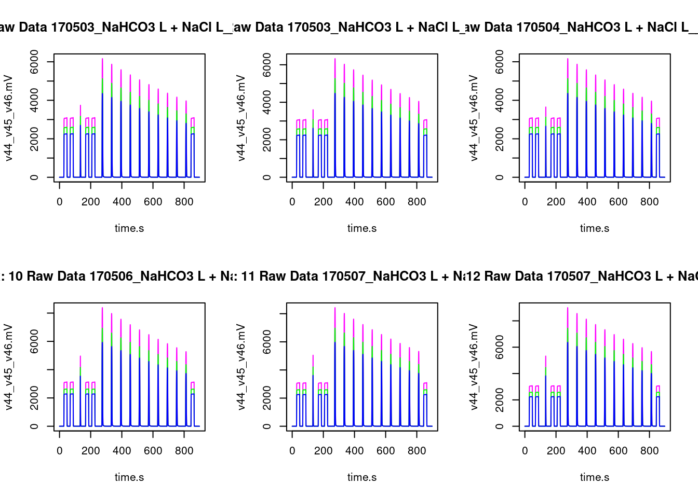
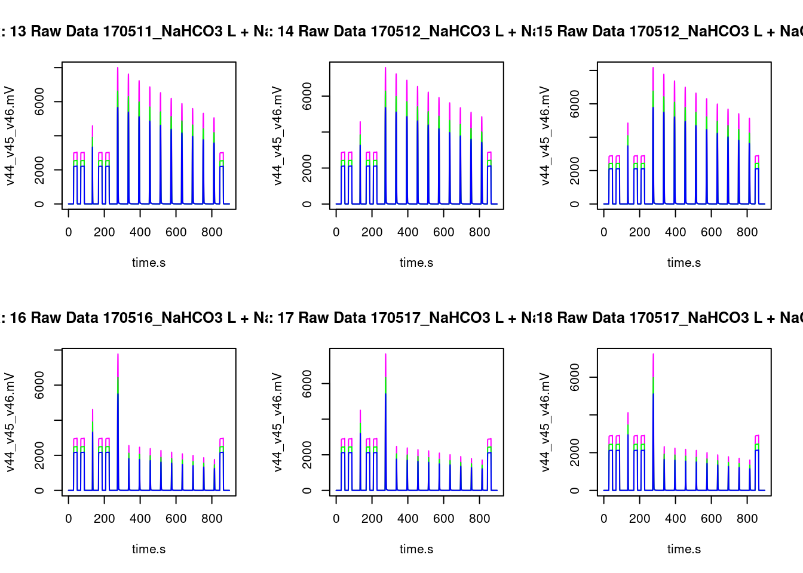
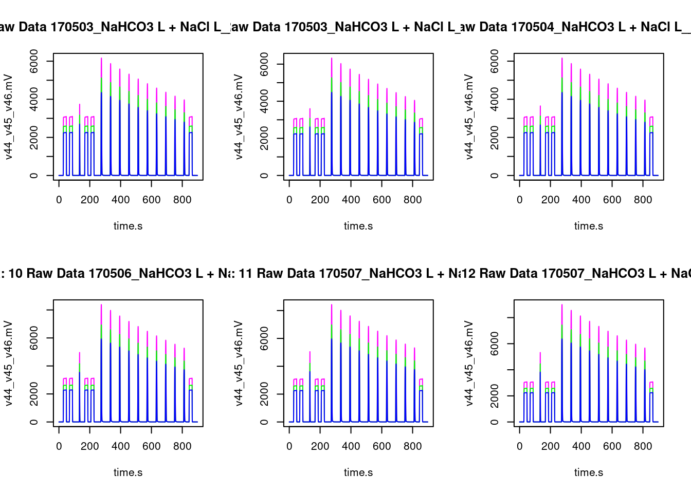
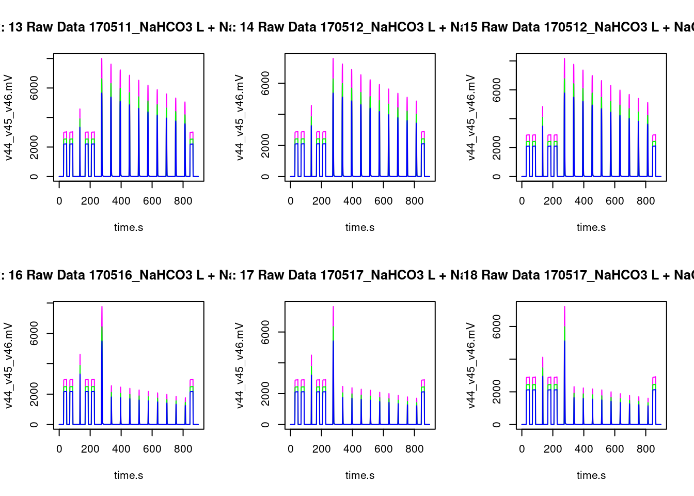
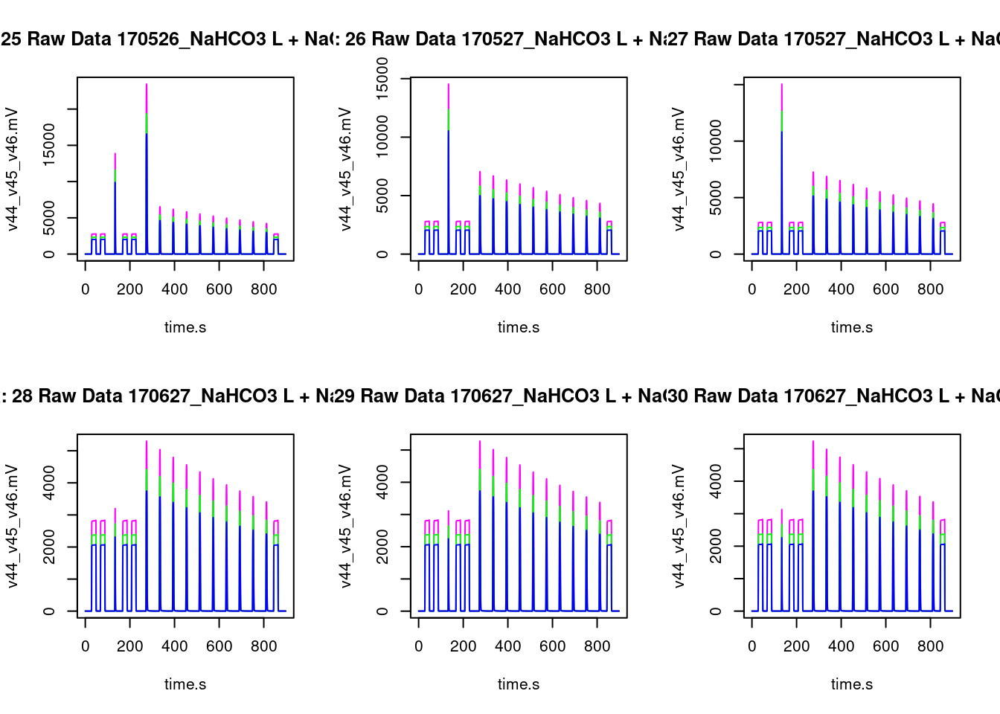
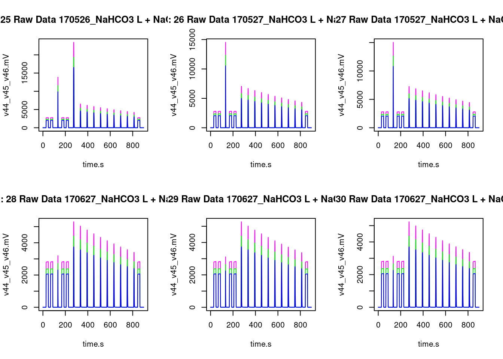

This article introduces the MLMS R library and is a draft of a vignette(R Core Team 2019).
The github link for MLMS is github.com/lilyacb/MLMS. Open this document in a browser for the links to work.
1 Accessing information and making tables
Tables summarizing .dxf file contents can be produced with read_summary().
Source
datafile<-"170525_NaHCO3 L + NaCl L_.dxf"
#data_file<-"https://github.com/lilyacb/MLMS/blob/main/Data/170525_NaHCO3%2#0L%20%2B%20NaCl%20L_.dxf" # would work if changed to csv!!
#file.summ<-read_csv(data_file)
# Print table without kable
fileI.summ<-read_summary(datafile)Output
## Length Class Mode
## version 1 package_version list
## read_options 4 -none- list
## file_info 16 tbl_df list
## method_info 3 -none- list
## raw_data 5 tbl_df list
## vendor_data_table 39 tbl_df listYou can use kable to make a fancier table.
Source
#class.source='details hide'
# Using kable
knitr::kable(fileI.summ,caption="170525_NaHCO3 L + NaCl L_.dxf file summary")| Length | Class | Mode | |
|---|---|---|---|
| version | 1 | package_version | list |
| read_options | 4 | -none- | list |
| file_info | 16 | tbl_df | list |
| method_info | 3 | -none- | list |
| raw_data | 5 | tbl_df | list |
| vendor_data_table | 39 | tbl_df | list |
You can print information contained in the file_info, vendor_info and raw_data tabs of the .dxf file.
Get file information with file_info().
Source
# Can get file information
fi.df<-file_info(files=datafile)
knitr::kable(fi.df,caption="170525_NaHCO3 L + NaCl L_.dxf file information")| file_id | Identifier_1 | Analysis | Preparation | Date_and_Time |
|---|---|---|---|---|
| 170525_NaHCO3 L + NaCl L_.dxf | NaHCO3 L + NaCl L | 4172 | 2% CO2 in He 24hrs | 2017-05-25 21:15:20 |
Get the vendor data table with vendor_info().
Source
# Can get vendor info
vi.df<-vendor_info(datafile)
kbl(head(vi.df)[1:3,],caption="170525_NaHCO3 L + NaCl L_.dxf vendor data") %>%
kable_paper() %>%
scroll_box(width=5,height = "200px")| Identifier_1 | Peak_Nr | Start | Rt | End | Intensity_All | rIntensity_All | Ampl_44 | Ampl_45 | Ampl_46 | d13C/12C | d18O/16O |
|---|---|---|---|---|---|---|---|---|---|---|---|
| NaHCO3 L + NaCl L | 1 | 27.1700000762939 | 47.443000793457 | 50.3689994812012 | 40.90863519699 | 141539.302508887 | 2062.13298836363 | 2371.49813464285 | 2812.49753618504 | -36.8309479493618 | -39.9994709523972 |
| NaHCO3 L + NaCl L | 2 | 67.088996887207 | 87.3619995117188 | 90.0790023803711 | 40.8018339597763 | 141166.762952385 | 2065.4354230274 | 2375.34645516822 | 2816.45019646327 | -36.9 | -40.0000000000001 |
| NaHCO3 L + NaCl L | 3 | 131.878997802734 | 134.177993774414 | 138.149002075195 | 0.775306018352309 | 2741.90298831581 | 497.765554776576 | 587.296395809005 | 684.745514792838 | -12.8581753517045 | -3.96450973206153 |
Get the raw data using raw_data()
Source
# Can get the raw data
raw.df<-raw_data(datafile)
knitr::kable(head(raw.df),caption="170525_NaHCO3 L + NaCl L_.dxf raw data")| file_id | tp | time.s | v44.mV | v45.mV | v46.mV |
|---|---|---|---|---|---|
| 170525_NaHCO3 L + NaCl L_.dxf | 1 | 0.209 | 1.412726 | 0.8119730 | 2.852197 |
| 170525_NaHCO3 L + NaCl L_.dxf | 2 | 0.418 | 1.416549 | 0.8024275 | 2.854114 |
| 170525_NaHCO3 L + NaCl L_.dxf | 3 | 0.627 | 1.414637 | 0.7928824 | 2.823437 |
| 170525_NaHCO3 L + NaCl L_.dxf | 4 | 0.836 | 1.412726 | 0.9628401 | 3.186850 |
| 170525_NaHCO3 L + NaCl L_.dxf | 5 | 1.045 | 1.406990 | 0.8768920 | 3.003719 |
| 170525_NaHCO3 L + NaCl L_.dxf | 6 | 1.254 | 1.410814 | 0.7508881 | 2.712264 |
Get the resistor information using resistor_data()
Source
# Can get the resistor information
resist<-resistor_data(datafile)
knitr::kable(resist,caption="170525_NaHCO3 L + NaCl L_.dxf resistor information")| file_id | cup | R.Ohm | mass |
|---|---|---|---|
| 170525_NaHCO3 L + NaCl L_.dxf | 1 | 3e+08 | 44 |
| 170525_NaHCO3 L + NaCl L_.dxf | 2 | 3e+10 | 45 |
| 170525_NaHCO3 L + NaCl L_.dxf | 3 | 1e+11 | 46 |
Get the isotopic reference values with reference_values_ratio()
Source
# Can get isotopic reference values with ratios
stand_ratio<-reference_values_ratio(datafile)
knitr::kable(stand_ratio,caption="170525_NaHCO3 L + NaCl L_.dxf isotopic reference values with ratios")| file_id | standard | gas | delta_name | delta_value | reference | element | ratio_name | ratio_value |
|---|---|---|---|---|---|---|---|---|
| 170525_NaHCO3 L + NaCl L_.dxf | CO2_zero | CO2 | d 13C/12C | -36.9 | VPDB | C | R 13C/12C | 0.0111802 |
| 170525_NaHCO3 L + NaCl L_.dxf | CO2_zero | CO2 | d 13C/12C | -36.9 | VPDB | O | R 18O/16O | 0.0020672 |
| 170525_NaHCO3 L + NaCl L_.dxf | CO2_zero | CO2 | d 13C/12C | -36.9 | VPDB | O | R 17O/16O | 0.0003860 |
| 170525_NaHCO3 L + NaCl L_.dxf | CO2_zero | CO2 | d 18O/16O | -40.0 | VSMOW | H | R 2H/1H | 0.0001558 |
| 170525_NaHCO3 L + NaCl L_.dxf | CO2_zero | CO2 | d 18O/16O | -40.0 | VSMOW | O | R 17O/16O | 0.0003799 |
| 170525_NaHCO3 L + NaCl L_.dxf | CO2_zero | CO2 | d 18O/16O | -40.0 | VSMOW | O | R 18O/16O | 0.0020052 |
Use DT to render larger tables neatly. You can show only a few lines, have a search bar, filters and more.
Source
datatable(vi.df,#filter="top",
options=list(pageLength=5,scrollX=T))2 MS data processing
2.1 Peak areas
Peak areas were calculated using the trapz package, which implements numerical integration via the trapezoid rule.
Math with KaTex produces nice equations. You can highlight formulas or text.The trapezoid rule:
\[ \int\limits_a^b f(x)dx\approx \sum_{n=0}^{N-1}{\frac{1}{2}(f_n+f_{n+1})(\varDelta x)_n} \]
You can insert images into an RMD doc.
Source
trapImg<-readPNG("trapezoidalRuleImg.png")
grid.raster(trapImg)Graphical illustration of the trapezoid rule for numerical integration
Calculate the peak areas using trap_area_allPks().
Source
# Can get peak areas
rawN<-"v44.mV"
areaPks<-trap_area_allPks(raw.df,vi.df,rawN)
knitr::kable(areaPks,caption="170525_NaHCO3 L + NaCl L_.dxf all peak areas")| Pk_Nr | trap_area |
|---|---|
| 1 | 40.6839545 |
| 2 | 40.5842293 |
| 3 | 0.7984758 |
| 4 | 40.5428463 |
| 5 | 40.3672183 |
| 6 | 3.3203306 |
| 7 | 3.1683712 |
| 8 | 3.0249778 |
| 9 | 2.8898409 |
| 10 | 2.7635269 |
| 11 | 2.6484939 |
| 12 | 2.5426593 |
| 13 | 2.4407975 |
| 14 | 2.3417151 |
| 15 | 2.2528789 |
| 16 | 40.4814526 |
2.2 Data visualization
You can graph the intensity vs retention time using plot_ms().
Source
# Intensity_All vs Rt for an experiment
ia.xname<-"Rt"
ia.yname<-"Intensity_All"
# plot
plot_ms(vi.df,ia.xname,ia.yname)Intensity_all vs Rt for 170525_NaHCO3_L_+_NaCl
Plot individual peaks in an experiment with plot_individual_peaks().
Source
# Can plot peaks in an experiment individually (Intensity (mV) vs Rt)
time.s<-as.numeric(raw.df$time.s)
start.v1<-as.numeric(vi.df$Start)
end.v1<-as.numeric(vi.df$End)
v44<-as.numeric(raw.df$v44.mV)
# plot just the first peak to inspect
peak1.p<-plot_individual_peaks(start.v1,end.v1,time.s,v44,"1","v44.mV")Peak 1 intensity (v44.mV) vs. time
Plot the raw data, intensity vs retention time, with gg_raw_plot()–make function!!
Use ggplot to plot the raw (redo colour label in legend)
Source
raw.dat<-read.table("LLrawdat")
ggplot(raw.dat,aes(x=time.s,y=v44.mV))+
geom_line(aes(color="v44.mV"))+
geom_line(aes(x=time.s,y=v45.mV,color="v45.mV"))+
geom_line(aes(x=time.s,y=v46.mV,color="v46.mV"))+
labs(title="170525_NaHCO3 L + NaCl U",x="time.s",y="v44_v45_v46.mV")
Plot the raw data of all files in a directory and export to a pdf file using generic_plot_all_raw() change to ggplot version–new func!
Source
# Can plot raw data of all files in a directory
# Get all filenames of .dxf files in the directory
LLdir<-"NaHCO3_L_+_NaCl_L"
fileNames<-all_filenames(LLdir)
setwd(LLdir)
rawList<-raw_data_all(fileNames)
setwd("~/Desktop/EuropaMLMS/rmdMLMS")
# plot all raw data
generic_plot_all_raw(rawList) 
 

2.3 Sorting and quality checks
2.3.1 Automated sorting of a directory of .dxf files
A directory of .dxf files can be organized by Identifier_1 and Preparation method.
Contents of an unsorted directory of .dxf files.
Output
## [1] "170525_NaHCO3 L + NaCl L_.dxf" "170525_NaHCO3 L + NaCl U_.dxf"
## [3] "170525_NaHCO3 L_.dxf" "170525_NaHCO3 U + NaCl L_.dxf"
## [5] "170525_NaHCO3 U + NaCl U_.dxf" "170525_NaHCO3 U_.dxf"Use sort_by_identifier_1() to sort a directory of .dxf files by Identifier_1
Source
# Use Identifier_1 labels to sort data
unsortedPath<-"~/Desktop/EuropaMLMS/rmdMLMS/vignetteData/sortFolder"
setwd(unsortedPath)
sort_by_identifier_1(unsortedPath)
setwd("~/Desktop/EuropaMLMS/rmdMLMS")
Contents of the sorted directory.
Output
## [1] "cache" "NaHCO3 L" "NaHCO3 L + NaCl L"
## [4] "NaHCO3 L + NaCl U" "NaHCO3 U" "NaHCO3 U + NaCl L"
## [7] "NaHCO3 U + NaCl U"2.3.2 Automated quality-control and calibration of a directory of .dxf files
Perform quality checks and remove files that fail any of the checks.
Quality checks:The list above represents the order of quality checks and a file is removed immediately after it fails a check (before the next check is performed).
1. Peaks present/number of peaks
Check that there are more than 0 and fewer than a specified number of peaks.
2. Reference peaks
Check-
3. Reference peaks
checks-
2.3.2.1 Quality-control summary for a directory of .dxf files
Output from the quality check and calibration process can summarized in tables and analyzed.
QC1
(tab content)
QC2
(tab content)
Summaries for analyses that failed checks
2.3.2.2 Internal standards summary for a directory of .dxf files (if standards present)
Internal standards can be checked for a batch of runs (several .dxf files with internal standard experiments).
2.3.3 Automated separation and quality-control of reference and sample peaks in a combined .csv file for multiple experiments
Processing of weekeqdata (three .csv files) into quality-checked reference and sample peaks
3 UMAP
Illustration of interactive graphics
3.1 Unfiltered data
UMAP for different reactions that have not been quality-checked.
This UMAP uses a directory of unsorted, unfiltered data and is for all the peaks in the data set.
Source
unfiltPlot.dat<-read.table("UMAP_NaHCO3_+_NaCl_notQC")
p<-ggplot(unfiltPlot.dat,
aes(x=x,y=y,color=Identifier_1))+
geom_point()+
labs(title="UMAP of NaHCO3 + NaCl (not quality-checked)")
ggplotly(p)3.2 Quality-controlled data
UMAP for different reactions that have been quality-checked.
EXAMPLE of interactive plot with multiple variables
Source
library(gapminder)
p <- gapminder %>%
filter(year==1977) %>%
ggplot( aes(gdpPercap, lifeExp, size = pop, color=continent)) +
geom_point() +
scale_x_log10() +
theme_bw()
ggplotly(p)